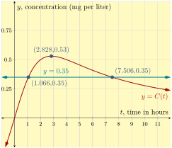
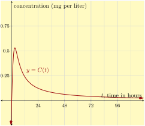

Example 3.1.2.
When a drug is injected into a patient, the drug’s concentration in the patient’s bloodstream can be modeled by the function \(C\text{,}\) with formula
\begin{equation*}
C(t)=\frac{3t}{t^2+8}
\end{equation*}
where \(C(t)\) gives the drug’s concentration, in milligrams per liter, \(t\) hours since the injection. A new injection is needed when the concentration falls to \(0.35\) milligrams per liter. Using graphing technology, we will graph \(y=\frac{3t}{t^2+8}\) and \(y=0.35\) to examine the situation and answer some important questions.

-
What is the concentration after 10 hours?
-
After how many hours since the first injection is the drug concentration greatest?
-
After how many hours since the first injection should the next injection be given?
-
What happens to the drug concentration if no further injections are given?
Explanation.
-
To determine the concentration after 10 hours, we will evaluate \(C\) at \(t=10\text{.}\) After \(10\) hours, the concentration will be about 0.2777 mg⁄L.\begin{align*} C(10)\amp=\frac{3(10)}{10^2+8}\\ \amp=\frac{30}{108}\\ \amp=\frac{5}{18}\\ \amp\approx 0.2777 \end{align*}
-
Using the graph, we can see that the maximum concentration of the drug will be 0.53 mg⁄L and will occur after about \(2.828\) hours.
-
The approximate points of intersection \((1.066,0.35)\) and \((7.506,0.35)\) tell us that the concentration of the drug will reach 0.35 mg⁄L after about \(1.066\) hours and again after about \(7.506\) hours. Given the rising, then falling shape of the graph, this means that another dose will need to be administered after about \(7.506\) hours.
-
From the initial graph, it appears that the concentration of the drug will diminish to zero with enough time passing. Exploring further, we can see both numerically and graphically that for larger and larger values of \(t\text{,}\) the function values get closer and closer to zero. This is shown in Figure 4 and Figure 5.
\(t\) \(C(t)\) \(24\) \(0.123\ldots\) \(48\) \(0.062\ldots\) \(72\) \(0.041\ldots\) \(96\) \(0.031\ldots\) \(120\) \(0.020\ldots\) Figure 3.1.4. Numerical Values for \(C(t)=\frac{3t}{t^2+8}\) 
Figure 3.1.5. Graph of \(C(t)=\frac{3t}{t^2+8}\)